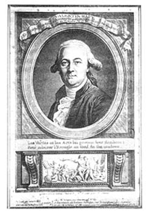

Beatrice Christensen Sköld
Valentin Haüy – the Father of the Education for the Blind
The Swedish Library of Talking Books and Braille (TPB)
In this study the life and works of Valentin Haüy are described.
Valentin Haüy (1745-1821), of many called the father of the education of the blind,
founded a school for blind children of both sexes in Paris in 1785.
In 1786 he published the first known book about education for the blind.
His main idea was the necessity of educating the blind to an independent life.
Thus the blind were trained for different professions such as printing, basket making, sewing etc.
Another of Haüys ideas was that blind children should not be segregated but educated together with sighted children.
His method of printing books with letters in relief and ink-print was a minor revolution that enabled the blind to read books.
In the study a hitherto unknown period in Haüys life is described.
It is the period 1807-1820 which he spent in St Petersburg, then the capital of Russia.
In the study there is also an analysis of Haüy’s influence on the education of the blind in other European countries.
Key words:
Valentin
Haüy,
education
of the blind,
relief
print,
visual
communication,
history
4
During my 19 years at the Swedish Library of Talking Books and Braille (TPB), I have frequently been asked about the history of the Braille system and these questions were really what motivated my research into the life of Louis Braille, the inventor of the system of writing for the blind which was named after him. My investigations revealed that Louis Braille himself would have had almost no schooling at all if it had not been for Valentin Haüy, the father of education for the blind.
As there is very little literature available in Swedish on either Valentin Haüy or Louis Braille, the two principle figures in the history of education for the blind, I decided to do something to remedy this. I starrrrted with Louis Braille, the inventor of the system of writing for the blind which is in use today, and when I had finished my studies of Braille's life, I naturally went on to investigate the life of Valentin Haüy. At the time I had to write a paper on education for the blind, as part of my studies at the Department of Education (Stockholm university), so I decided to kill two birds with one stone and combine both tasks.
Working on this paper was no easy task as so few sources can be consulted in Sweden. There is an international lending network, but borrowing books is a slow process since foreign libraries do not always deliver by airmail. My principal source was thus the library at the Danish Museum of the Blind, originally the library of the Royal Institute for the Blind. It was there that I came across a copy of Haüy's first book on education for the blind.
I particularly wish to thank Mogens Bang, head of the Danish Museum of the Blind, who made it possible for me to spend time in the museum sifting through the material in their unique collection of older books on education for the blind.
I would also like to thank Marie Strömbäck and Kerstin Wallin, who helped me with the translations from French. Finally, I am much obliged to Eric Engström, my tutor, for inspiring and encouraging me in my work.
Beatrice Christensen-Sköld
5
My interest in Valentin Haüy, the father of education for the blind in Europe, was aroused while working at TPB on a book about Louis Braille, the creator of the Braille system. I discovered that there was a dearth of literature on Haüy in Swedish, and that in the limited literature I was able to consult, information about him was often contradictory. In particular, I noticed that there were no references to the period of the more than ten years which Haüy spent in Russia.
In this paper I have proposed a number of research questions:
My purpose in this paper is to shed some light on Valentin Haüy, the person, and the role he played in the history of education for the blind, and to attempt to ascertain whether he was influential in the introduction of education for the blind in other countries, particularly in Sweden.
For obvious reasons, I have chosen a hermeneutic method. I was unable, of course, to interview Valentin Haüy in person; he has been dead for nearly 200 years. Initially, I had in mind the idea of adopting an idiographic approach to my investigation but found this difficult to apply to an historical personage such as Haüy. However, it was, above all, the lack of first-hand sources which most discouraged me.
In historical research, one must have access to the remains or traces of "reality in the past tense," as Sjöstrand (1972) put it. The researcher pieces together, in a manner of speaking, a mosaic from the fragments he manages to find. These remains and traces may be many and varied; in the case of Haüy, they are mainly written sources (Sjöstrand 1972).
One of the purposes of this paper is to create a portrait in writing of Valentin Haüy. In other words, a biography. When writing a biography, one should make use of material which directly or indirectly, in part or completely provides information about the life of one or several people (Engström 1995). This may or may not be written material. Written material produced by the investigated person himself or herself is, according to Engström, "first-person documentation," while material about the person investigated is "third-person documentation". The lack of first-hand sources naturally means that the validity of this type of documentation is questionable (Sjöstrand 1972). However, some of the documentation I have used does in fact quote from first-hand sources or "first-person documents". To judge from the literature available on the subject, I am one of the very few (if not the only) researchers who have used Skrébitsky as a source.
6
I did have access to a single first-hand source - the information I use to describe Haüy's pedagogical methods was, in part, gleaned from his own Essai sur l'Education des Aveugles.
I have hunted for sources in museums and archives where most of the material available was in printed form. The few hand-written documents in existence are in the possession of the Association Valentin Haüy in Paris.
Most of the documents I have used for this paper are in the library at the Danish Museum of the Blind, which is the only Nordic library that possesses a copy of Valentin Haüy's Essai de l'Education des Jeunes Aveugles, together with the Institution des Jeunes Aveugles' annual reports. One of these reports merits special attention since it contains a relatively early biographical article on Valentin Haüy written by the director of the institute, Dr P-A Dufau. The report is dated 1852, when the institute transferred to its present location in the Boulevard des Invalides. The article in question was written in 1844 and was published separately. Dufau's main source is a letter written by Valentin Haüy to his son.
Paul Henri, head of the Association Valentin Haüy in the 1950s, in his biography of Louis Braille (The Life and Work of Louis Braille 1809-1852) dedicated an ample section to Valentin Haüy and his pioneering work in the field of education for the blind. His biography first appeared in France in the 1950s in a Braille version and was later, on the decision of the World Blind Union, translated into English and published by the South African National Council for the Blind in 1987. According to Didier-Weygand (2000), Henri also published a separate biography of Valentin Haüy (Paris, 1984), but unfortunately this information reached me only when the present paper was to all intents and purposes completed.
Existing literature tends to ignore Valentin Haüy's stay in St Petersburg. so I have paid particular attention to that period in his life. A valuable source was the Russian ophtalmologist Alexander Skrébitsky's little publication, Valentin Haüy à St. Petersbourg (1884). Skrébitsky can be said to have rediscovered Haüy in Russia during his own attempts to improve conditions for the blind. Haüy's institute for the blind in St Petersburg had by then been closed and forgotten for many years, but Skrébitsky found material in its archives on which he based his book. There was, for example, a box full of documents dating from the period 1807-1809, but only a few documents from the latter part of Haüy's stay in Russia. Skrébitsky managed to smuggle the box out of Russia and donated it to the Valentin Haüy Museum in Paris where it is still kept (Skrébitsky 1884). I have been able to ascertain that this information is correct, but have not had the opportunity to consult these documents personally. I trust that Skrébitsky's quotations from them are accurate.
The French historian Zina Weygand published a booklet entitled Les Temps des Fondateurs 1784-1844 for the second Congress on the history of the blind in Paris in 1998. Her booklet is interesting as she had access to the archives of the Institution des Jeunes Aveugles (INJA) created by Valentin Haüy, the Bibliothèque National de France, the Bibliothèque Association Valentin Haüy, as well as those of the Archive du C.N.H.O. des Quinze-Vingt. Her booklet is only a foretaste of her doctoral thesis, La Cécité et les Aveugles dans la Société Française: Représentations et Institution du Moyen Âge aux Premières Années du XIX Siècle, published in March 2000. Weygand married shortly after the Paris Congress and now uses a double surname, Didier-Weygand. Her sources include documents from archives, press cuttings and documents and letters written by Haüy himself. She is the only researcher to have made use of the minutes kept by the various revolutionary committees in Paris during the 1790s. She does not, however, write about Haüy's years in Russia.
7
To illustrate Haüy's influence on the development of education for the blind in other countries, I have chosen D.G. Pritchard's Education and the Handicapped 1760-1960 (1963) as my main source since it is considered a standard work. My sources on the work of pioneers in the education of the blind in Sweden are O.E. Borg's Minnen från den svenska blindundervisningens 70-års jubileum den 21 maj 1883, Kjell-åke Johanssons research report Om blindundervisningen i Sverige från 1809 (1974) and Staffan Förhammar's doctoral thesis Från tärande till närande (1991).
I have also consulted press articles, amongst them Marlene Jantsch's article on Maria Theresia von Paradis, in the Wiener Medizinische Wochenschrift 47/1955.
Special education for the deaf, the visually handicapped and the disabled has its roots in the France of the Enlightenment, a period of growing interest in the creation of organised education for the handicapped. In 1760, the abbé l'épée founded the first school for the deaf, where his educational methods were based on the teaching of sign language (Didier-Weygand 2000). Interest in education methods for the disabled began to develop seriously in the early years of the 19th century (Förhammar 1991).
The debate on the social value of the handicapped and their learning capacity began with John Locke (1632-1704) and his essay "The Molyneux Problem," included in "An Essay Concerning Human Understanding" (Lowe 1995). Locke received a letter from William Molyneux, an Irishman, dated 2nd March 1693, in which the following question was posed: "If a person who was born blind, and who has learnt to distinguish by touch between a cube and a sphere regains vision after an operation, will he then be able to distinguish the cube from the sphere by sight alone?" (Lowe 1995).
Locke had a great influence on the French philosophers of the Enlightenment, and the famous debate on the "Molyneux problem" inspired the French philosopher Denis Diderot (1713-1784) to make contact with blind people and later publish his experiences in a pamphlet, Lettre sur les Aveugles pour Ceux qui voient (A Letter to the Blind for Those Who Can See). His letter served several purposes. On the one hand, Diderot exposed a fraud which had taken place in the drawing-room of the scientist S.A. Réaumur , while on the other he made a number of observations which were a radical criticism of the conventional ideas of the time (Helldén 1994). The fraud in question consisted of a performance by a girl who claimed to be blind in Réaumur's drawing-room during which she played, sang and answered a series of general knowledge questions (for example, the length of certain rivers, the names of European cities, etc.). Diderot unmasked this humbug, but also pointed out that fraudulent performances were unnecessary, since the blind could in fact be educated. As an example of this, he mentioned the blind English mathematician Nicholas Saunderson. In the second half of his letter, Diderot has Saunderson express, in an imaginary dialogue, his own atheistic philosophy of life, for which Diderot paid with a brief sojourn in prison (Helldén 1994, Didier-Weygand 2000).
Diderot's letter made the bourgeoisie of the time aware that the blind could in fact be educated. He went on to found a philanthrophic society in 1780 - the Société Philanthropique (Helldén 1994), which opened up homes for the blind where they were taught handicrafts. These "homes for the blind" -"Maisons des Enfans-Aveugles"- took in blind persons between the ages of 20 and 25 (Didier-Weygand).
8
With the support of the Société Philanthropique,Valentin Haüy founded the first special school for blind children and adolescents in 1784.
Diderot himself had a blind pupil, Mélanie de Salignac (1741-1763), who was his friend Sophie Volland's niece (Eriksson 1998, Helldén 1994). He wrote about her in Addition de Lettre sur les Aveugles. Salignac was mainly taught, however, by her mother. She could read and write and, what is particularly interesting, she wrote in raised print, which Haüy then experimented with on a larger scale.
Valentin Haüy was born on 13th November 1745 in Saint-Just en Chaussé (Picardy), a small village approximately 35 km east of Paris. His father was a weaver. Haüy's elder brother, the abbé René Just Haüy (1743-1822), was the pioneer of crystallography (the science of the structure, forms and property of crystals) and played an important role in the introduction of the metric system (Dufau 1852, Henri 1987, Sakula 1998, Weygand 1998).
In 1751, the family took up residence in Paris and the two brothers began to attend a school run by a Catholic order. Later, both of them studied at the Sorbonne; Valentin studied Latin, Greek and Hebrew and was said to be fluent in about ten modern languages. He earned a living as a translator of private and public documents and was soon able to boast the title of Royal Interpreter. He was also interpreter to the city council of Paris and the Admiralty. Before his appointment as royal interpreter he had become senior master in a secondary school. He later became a member of the Bureau Académique des écritures, founded by Louis XVI, probably because he had invented a method of deciphering secret codes and military code systems (Henri 1987). In 1771, the French police began to take an interest in deciphering codes, and during the following ten years, Valentin Haüy worked for the secret police, where his task was to investigate all foreign correspondence carried by the French postal service and to decipher secret documents. He continued these activities under the various revolutionary governments in the latter part of the century.
Haüy was also interested in the education of the deaf. He is said to have been actively involved in the teaching of deaf pupils and to have worked from time to time with the abbé l'épée (Skrébitsky 1884; see below, section 3.9). We can assume that his interest in the handicapped had already been aroused in 1771 when he visited one of the public performances given by the abbé's deaf pupils (Weygand 1998).
In a letter to his son, Haüy tells how during the annual market in St Ovid's Square in Paris, he saw blind musicians from the Quinze-Vingt asylum perform (Borg 1883, Dufau 1852, Didier-Weygand 2000). He was sitting at a café when he saw some very strange creatures fitted with huge paper spectacles and pointed hats with donkey's ears affixed to them. Sheet music was placed upside down on the blind musicians' music stands while they banged, blew, and squeezed noises out of their worn-out instruments.
Haüy was shocked by the way the disabled musicians' wretchedness was exaggerated by their ridiculous outfits. He was also upset by the callousness of the audience, who howled with laughter at this shambles of an orchestra. Haüy did not see any reason to laugh at people just because they had a physical impediment.
9
From that day he decided to dedicate his life to improving the conditions of the blind.
In his letter, he reflects:
"We asked ourselves: does not a blind person recognise objects by their different shapes? Is he mistaken as to the value of a coin? Why should it be impossible for him to distinguish between a C and a G, or between an A and an F, if those letters were made easier to distinguish? We sometimes reflected on the use of this performance (...)
We soon saw various examples that convinced us how useful it would be for the blind to have access to teaching methods which could increase their knowledge so that they would not have to wait for help or sometimes ask the sighted to help them, often to no avail"
(Weygand, 1998 p. 8).
Maria Theresia von Paradis was a woman who had a significant influence on Haüy and his teaching methods.
They met in Paris in 1785 while Paradis was on a concert tour of Europe.
Weygand (1998) says that Haüy read an article in a Parisian newspaper informing the public that the blind child prodigy Mara Theresia von Paradis was in the city and decided to contact her.
Maria Theresia von Paradis was born in Vienna and became blind at about 4 years of age (Jantsch 1955, Eriksson, 1998).
Jantsch suggests that the girl's blindness had hysterical origins.
Her father was a well-to-do lawyer.
Maria Theresia was extremely musical and became a virtuoso on the piano; she had her own school in Vienna where she taught piano and singing.
Between 1784 and 1785, she toured Europe, playing at the courts of Paris, London, Brussels, Hanover and Berlin, and giving concerts in several other cities.
Mozart composed a concerto for piano and orchestra especially for her European tour and von Paradis also wrote her own music, using a system for writing musical notes which she had had specially invented.
Before von Paradis set off on her grand tour of Europe, she had relief maps made of the different countries and cities she was to visit.
On these maps, frontiers and rivers were embroidered in backstitch, while cities and towns were represented by different-sized buttons; large buttons for capitals, smaller buttons for smaller cities or towns.
Von Paradis had raised texts printed; a special printing press was made for her by Wolfgang Ritter von Kempelen (Jantsch 1955).
Von Paradis corresponded with Johan Ludwig Weissenburg, who was also blind and who himself used raised maps and writing.
Their letters show that they discussed how raised pictures and maps could be made.
For mathematical calculations, Paradis used an arithmetic board made in England by Saunderson.
Haüy's meeting with Maria Theresia von Paradis gave him the inspiration and encouragement he so desperately needed at that time to develop an educational programme for blind children (Eriksson 1998, Didier-Weygand 2000).
He presented his plan, "Plan de l'Education à l'Usage des Aveugles," to the Philanthropic Society, which at that time sponsored twelve children from poor families (Weygand 1998).
In his Essai sur l'Education des Enfans-Aveugles (cf. section 3.7), Haüy repeatedly mentions that several of the tools he recommended for the teaching of blind children had been used by Maria Theresia von Paradis.
10
Haüy was convinced that the blind deserved a better life than begging and performing in market places (Dufau 1844, Henri 1987). They ought to enjoy the same right to education and work as the sighted. Not until thirteen years after the market in St Ovid's Square did he have an opportunity to demonstrate that the blind could be educated. This occurred when he was invited to teach François Lesueur, or Le Sueur, as Didier-Weygand sometimes writes his name.
Haüy first met Lesueur, standing begging at the entrance to the church of Saint-Germain-des Prés (Didier-Weygand 2000). Lesueur was a professional beggar who supported himself, his parents and four siblings with the money he was given by churchgoers (since the Middle Ages, the Catholic Church had allowed the blind to beg outside churches) (Kretschmer 1937).
The story goes on to tell how Haüy, when he gave Lesueur some money, was told, "You thought you gave me a measly sou when in fact it was an écu " (Webster 1964). From this incident Haüy immediately drew conclusions regarding the fine sense of touch the blind possess. If we compare this version of their meeting with Haüy's own words in section 3.3, we can guess how the story originated.
Haüy started by teaching Lesueur good manners, grammatically correct speech and arithmetic. Haüy's main interest, however, was teaching the blind to read. He had wooden letters made so that Lesueur could learn the alphabet and later learn to read. This was achieved by forming the letters into words in a wooden frame. In a similar way, Lesueur learned the four arithmetical rules; in this case, wooden numbers were placed in different compartments in a frame. A major problem proved to be a supply of books for Lesueur. Haüy soon realised that his pupil could recognise raised letters, so he began to produce raised letters on waxed paper. Haüy had started teaching Lesueur on 31st May 1784. By September of the same year, he was able to announce his progress in an article in the Journal de Paris (Weygand 1998, Henri 1987). On November 18th, both teacher and pupil appeared before the Académie de l'écriture. It was common practice at that time for pupils to appear before the Academy and the Court, and not just "handicapped prodigies". The Academy apparently fulfilled some kind of educational inspecting and authorising function (Didier-Weygand).
Lesueur could read, recognise countries on a map and identify raised numbers on cardboard. This made Haüy's name as a teacher of the blind. The Academy decided to recommend his methods of teaching the blind (Weygand 1998). Thanks to Haüy's brother René-Just, the French Academy of Science became interested in his teaching methods. Four members of the Academy studied Haüy's methods and expressed their approval. Their report was registered by the Academy on 16th February 1785 (Weygand 1998).
In January 1785, Haüy became a member of the Société Philanthropique which also entrusted him with the teaching of their twelve blind protégés. These were all young adults aged between 20 and 30 (Didier-Weygand). Haüy could now rent a house in the Rue Coquillère where he taught his pupils. A year later, when the number of pupils had increased, he moved into a house in the Rue Notre-Dame-des-Victoires, where the Société Philanthropique had its workshop for the blind, and so l'Institution des Jeunes Aveugles (the Institute for Blind Children ) was born. The pupils who now arrived at the institute were young children (Didier-Weygand).
11
Twice a year the blind children performed before the Court. Louis XVI was patron of the institute and also contributed economically to its upkeep. In an appendix to Haüy's pamphlet, Essai sur l'éducation des Aveugles, there is a list of the first twelve pupils to perform at the Court.
Boys and girls alike attended the institute. The blind children came from poor homes and were not charged for their tuition. Haüy did, however, accept sighted children from well-to-do families who paid for their children's education. Haüy believed that sighted and blind children should be educated together without restriction (Weygand 1998).
Valentin Haüy's first and only pamphlet on his teaching methods was published in 1786 with the long title of Essai sur l'éducation des aveugles ou Exposé de différens moyens, vérifiés par l'expérience, pour les mettre en état de lire, à l'aide du tact, d'imprimer des livres dans lesquels ils puissent prendre des connaissances des langues, d'histoire, de la Géographie, de la Musique, &c., d'exécuter différens travaux relatifs aux Métiers, &c., Dédié au Roi, par M. Haüy. It was printed by Haüy's blind pupils. Only the preface was set in normal type; the main text was set in the type created by Haüy for use with ink print or raised print. It was dedicated to the French king, Louis XVI. The title page reads, "Au Roi", followed by a brief preface dedicated to the king:
"To the KING OF FRANCE
SIRE,
THE Protection with which your Majesty honours distinguished Talents ascertains your Claim to their Reverence and Respect. But when their Productions have a Tendency to console the Miseries of suffering Humanity, they have still a more powerful Title to attract the attention of Louis the Beneficent. It was under the influence of Sentiments inspired by a Title so amiable, which is deeply engraven on all the Hearts of France, that I conceived the desire of presenting to your Majesty the Fruits of my Labours ; if they have any Value, they will owe it to the double Advantage of appearing under a Patronage so august, and of becoming Vehicles to the Bounty expected from Sovereign by the Young and unhappy, who have been early deprived of the Benefit of Light with all its numerous and important Resources.
I am, With the profoundest respect,
Sire,
Your Majesty’s most humble,
must obedient
and most faithful subject and Servant,
HAÙY".
In his essay Haüy expounds his pedagogical theories and presents a programme of studies for blind children. His basic premise was that the "unfortunate Blind," who until then had been deprived of education, could in fact be educated and ought therefore to be given the opportunity to attend school and learn a trade by which they could later make a living.
Each subject is dealt with in a short chapter. Haüy gives simple, practical advice on teaching methods and on the production of material for use in object lessons and of a variety of teaching aids.
12
He lays particular stress on the methods to be used to teach blind children to read and write and on how to produce raised print books. An entire chapter is dedicated to explaining how blind pupils can be trained as compositors. He also attempts to demonstrate that those blind pupils who did learn some kind of handicraft (at Quinze-Vingt, for example) were able to earn their own living. Haüy therefore recommends that teaching of the blind should include activities such as the production of walking sticks and hairnets, sewing, bookbinding, etc.
Haüy also insists that blind pupils should study history, geography and music. In the chapter on the teaching of geography, he mentions Maria Theresia von Paradis and stresses the importance of tactile maps and the terrestrial globe to illustrate the concepts of countries, lakes, rivers, mountains, etc. He goes on to describe the method of producing maps developed by von Paradis and Weissenburg (see section 3.4). As for music and the possibility of a blind person's earning his living as a musician, Haüy points to von Paradis's success and her system of raised musical notes (cf. Section 3.4).
When he touches on the teaching of mathematics, Haüy affirms that although he admires Saunderson and Weissenburg's "arithmetic boards", he firmly believes that blind and sighted children should be taught together and for this reason he does not agree with the use of special mathematical teaching aids for blind children. Haüy does recognise that blind pupils may need some kind of assistance when drawing geometrical figures, for example, and had paper templates for this purpose.
Haüy's invention, a method of producing raised letters on paper with the types he had cast, was completely new (Weygand 1998). He now saw as his principle task to attempt to produce as many copies of books for the blind as possible. He wanted every blind child to have his or her own collection of raised print books. In time he designed and had made a printing press which could produce raised print and to which he added a device for dyeing the raised letters black. The first two books printed by Haüy for his blind pupils were produced in this way (see above). One was his own treatise on education for the blind: Essai sur l'Education des Enfans-Aveugles (1786); the other a historical review of the institute's first five years of existence entitled Notice Historique de l'Institution des Enfans-Aveugles (1791).
Haüy believed that his printing method would make it possible for the blind to print books not only for their own use but also for the sighted. He dreamed of a time when his blind pupils would become teachers of sighted children; the blind teacher and the sighted pupils would read from the same book. Haüy's method was, however, a form of printing, that is, it involved typographic composition, so to enable the blind to correspond with the sighted in a simpler fashion, Haüy designed a "writing board" on which the writer wrote with a steel pen which had an undivided nib. His idea was that the blind person should write his letter by hand on the one side of a suitable type of paper. This would produce raised letters on the other side of the paper, letters which the writer himself would be able to read by touch. Unfortunately, his apparatus was not of much use to those who had never seen letters (Didier-Weygand).
The school in the Rue Victoires did more than provide its blind pupils with a basic education, it also taught them a useful trade. Their teachers believed in the positive value of work. The children spun thread, wove, knitted, made leather belts and hairnets, etc. They produced raised print but also printed in ink. Towards the end of his essay on the education of the blind, (Haüy 1786) there are ten or so examples of the blind children's printing activities (invitation cards, announcements, invoices, prospectuses, etc.). Although Haüy had raised scores made, he did not at first consider music to be anything more than an entertainment for the blind.
13
He changed his opinion later when he discovered that the blind could learn to play the organ and thus could be employed as church organists (Skrébitsky 1884).
The aim behind Haüy's teaching methods was to enable his blind pupils to communicate satisfactorily with the sighted (Haüy 1786). He therefore rejected all writing systems for the blind which did not use the Roman alphabet. He would probably never have approved of Braille's system.
At first, boys and girls were taught together in mixed classes, but some years later, after Haüy had been severely criticised for the co-educational organisation of his school, the sexes were segregated (Didier-Weygand).
Haüy's successor at the institute, Guillé, was himself severely criticised for his harsh methods of punishment (Weygand 1998). In the accusations made against Guillé, his severity was compared with Haüy's mild methods and his concern for his pupils. It is not clear, however, whether the critics implied by this that Haüy never used corporal punishment.
Louis XVI was Haüy's patron and the institute's most important financial sponsor.
When the monarchy was overthrown in 1791, the Institute for the Blind came under the authority of the new revolutionary government.
Education at the institute, however, continued along the same lines as it had done under the monarchy.
The various revolutionary governments for their part believed that all forms of education should be free of charge and controlled by the State (Förhammar 1991, Weygand 1998).
The National Convention issued a decree on 28th September 1791 which nationalised the Institute for the Blind.
The need to reduce financial costs was responsible for the fusion of the Institute for the Blind and L'épée's Institute for the Deaf.
The resulting institute was moved to a monastery (Weygand 1998).
This fusion, however, was unsuccessful, and in 1794 the National Convention decided to separate the two schools once more.
Haüy played an important part in this decision.
He attacked l'épée's successor, Sicard, because he had criticised his teaching methods.
Haüy was at that time a member of one of the revolutionary committees in Paris and was able to have Sicard arrested (Didier Weygand).
Sicard was soon released, however, and two years later (1796) he had his revenge when he accused Haüy of belonging to an illegal secret society.
Haüy was arrested and spent a brief spell in prison.
After the break-up, the Institute for the Blind moved to a former convent at 34, Rue Denis, where it was renamed l'Institut National des Aveugles Travailleurs , that is The National Institute for Blind Craftsmen (Didier-Weygand, 2000).
Coinciding with the move, the institute was reorganised and the pupils now had to contribute to the upkeep of the new, revolutionary France (28th July, 1795).
The blind pupils' first task was to make 86 purses.
At this point, the revolutionary committees began to debate whether institutes for the disabled should be classed as schools or asylums (Weygand 1998).
Haüy initially sided with the Revolution.
He was, as we said, an active member of one of the revolutionary committees (Weygand 1998), and on 8th of June 1794, "the Day of Pure Reason", he did not hesitate to have his blind musicians appear on a mobile platform from which he, in revolutionary language, urged them to follow Robespierre, who was dressed as the high priest of Pure Reason (Henri 1987, Didier-Weygand 2000).
14
Under the monarchy, his blind pupils regularly appeared in public to demonstrate their progress and these performances continued during the revolutionary period.
Haüy's ability to adapt to the different régimes would later go against him, however.
During the Directorate, Haüy founded what was called a theophilanthropic cult with two other revolutionaries, La Revellère-Lepeaux and Chemin-Dupontè (Henri 1987, Weygand 1998, Didier-Weygand 2000).
This could be described as a development of the cult of pure reason in which the magistrate assumed the role of the priest.
The theophilanthropists substituted the head of the family for the priest; their philosophy was a mixture of theodicy and belief in the good individual (Didier-Weygand).
Haüy's successor as director of the institute (Guillé) was a strict Catholic who was horrified by Haüy's philosophical ideas.
He later accused Haüy of heresy (amongst other things) as one of his reasons for not permitting Haüy to visit the institute.
At the end of the revolutionary decade, the institute was bankrupt.
The State owed the institute 30 000 francs, apart from nine months' salary to teachers and other staff.
Teachers and pupils alike starved and froze.
Haüy lodged a complaint with the consular government but this was rejected outright; no money was forthcoming.
His activities during the Reign of Terror and the Directorate spoke against him (Weygand 1998).
On 14th March 1801, Napoleon Bonaparte, now First Consul, decided that the Institute for Blind Craftsmen should be integrated into the Quinze-Vingt Hospital, an asylum for elderly blind people which had existed since the end of the 13th Century (Kretschmer 1937, Weygand 1998).
Napoleon furthermore forbade the theophilanthropists to practise their cult.
Teaching at the institute was now reduced to two hours a day; during the rest of the day the blind children worked with sighted adults in the Quinze-Vingt workshops.
Haüy was extremely affected and protested in three letters to the Minister of Interior Affairs (Lucien Bonaparte, one of Napoleon's brothers and Second Consul during the Second Consulate).
The minister answered that the State was responsible for the education of the blind; Haüy's role was simply to carry out the State's orders (Didier-Weygand).
The answer to the last of the letters (dated 12th February 1802) was Haüy's dismissal, although he was granted a pension of 2000 livres a year.
In spite of this adversity, Haüy did not give up. He was now assured of an annual income of 2000 livres, so it was not long before he founded a private institute for the blind which he called the Musée des Aveugles (Kretschmer 1937, Weygand 1998, Didier-Weygand 2000). He planned that the new institute should complement the National Institute for the Blind. It was divided into two departments: one for pre-school children aged between four and seven years of age, the other for pupils over the age of sixteen who were taught a trade. Haüy was thus a precursor of Fröbel as far as pre-school education is concerned. The new institute fulfilled another of Haüy's dreams. His blind adolescent pupils taught the sighted children who boarded in an annexe of the Musée des Aveugles. In the long run, however, Haüy could not make ends meet and had to close the institute in 1806. According to Weygand (1998), he simply did not have enough pupils.
Skrébitsky says that Haüy was very heavily in debt when he eventually arrived in St Petersburg. A Maltese banker, amongst others, demanded payment which was deducted from his salary in Russia (Skrébitsky 1884).
15
Word of Valentin Haüy's success soon spread throughout Europe. Several of the enlightened rulers were interested in acquiring his services (Skrébitsky 1884). Teaching of the blind had started both in Vienna and in Berlin and Haüy exported his typographic cases and material for use in object lessons to institutes for the blind in these two capitals and in other European cities. When his finances were so depleted that he had to close down the Musée des Aveugles, a number of welcome invitations arrived, one of them from Tsar Alexander I of Russia. The tsar, himself educated in the spirit of Enlightenment (Troyat 1977, p. 324 f), invited Haüy to come to Russia for the purpose of founding an institute for the blind (Skrébitsky 1884).
According to Skrébitsky (1884), Alexander I employed a number of agents who informed him of every new idea that could successfully be introduced into Russia. Negotiations with Haüy were arranged by General Hitrowo, and plans were drawn up for the creation of an institute for the blind in St Petersburg. These plans show that Haüy had no intention of remaining in St Petersburg for any length of time. The project basically involved:
1. The supervision, in Paris, of the production of all the teaching material destined for use in the education and occupation of blind children and adults in Russia. Haüy promised to take with him to Russia educational material such as letters and numbers for reading, counting and printing, maps, writing boards, etc.
2. Haüy would travel to Russia the following Spring (1804) and remain there for about a year, accompanied by one of his blind pupils who had been taught by his methods. Haüy believed that his visit would bring success to the new institute and the ideas behind it and that it would encourage competition amongst the young Russians.
3. Haüy, whose idea the project was, agreed to teach his methods faithfully to the person appointed by His Imperial Highness Alexander I to direct the St Petersburg Institute for the Blind (Skrébitsky 1884, p. 11).
According to Skrébitsky, the Russian government asked Haüy's advice on the personal qualities and qualifications required of the new director of the St Petersburg institute for the blind, and on the economic compensation Haüy was willing to accept to take on the responsibility of setting up the institute. The Russian government also wanted to know how much the project would cost. As to the necessary qualities and qualifications of the director of the institute, Haüy (according to Skrébitsky) would have answered that this person should be selected from amongst those teachers who had a good knowledge of Russian and French and, if possible, German. The Director must also have an elementary knowledge of practical activities such as spinning, knitting, the making of hairnets, different kinds of weaving, etc. Haüy furthermore pointed out that the director must be familiar with the art of printing if he was to fulfil his task. Only an amateur's knowledge of music was required, however. Haüy added that apart from these basic qualifications, the director must have a good head on his shoulders, be gentle and patient and have a love for mankind in general.
Haüy asked his imperial highness for an annual salary of at least 40 000 roubles, of which half would be paid in advance when Haüy began his work. He also asked the crown to provide, at no cost to himself, a furnished house, light and fuel.
16
Finally, he asked for 2 000 roubles in advance, as travel allowance for himself and his blind pupil. Haüy did not ask for travel allowances for his wife and son, who accompanied him to Russia. He estimated the costs of inventories, including teaching material such as maps and a globe, at 4 500 francs and the annual operating costs, including salaries, at 54 700 francs. The institute should be staffed by three teachers, one of them a music teacher, and a manager for the printing works.
Haüy estimated that costs would decrease as the pupils progressed in their activities. This he based on his experience in Paris where his pupils, once they had acquired a certain degree of skill in handicrafts and printing were able to make a profit for the institute. Haüy was convinced that his experience in Paris could be transferred to St Petersburg, which shows how little he knew about the country he was about to visit.
Haüy made a stop in Berlin en route to Russia in 1806. He had already received a request from the king of Prussia who wondered if Haüy would be interested in founding a school for the blind in Berlin. In Prussia initiatives had already been taken in the 1780s to gain State control of all educational activities (Sjöstrand, 1968). King Frederick William III introduced Haüy to professor Johan August Zeune (1778-1853), who was already engaged in teaching blind children. Haüy and Zeune together designed a curriculum for an institute for the blind in Berlin (Skrébitsky 1884, Rath 1991). Professor Zeune later became the director of the institute. In Berlin as in Paris attempts were made to fulfil an important pedagogical objective: the combination of a theoretical-humanistic education and practical activities (Rath 1991). The battle of Jena and Auerstedt delayed Haüy's departure for St Petersburg, but in spite of this delay, he took time during the journey from Berlin to make a detour to Mitau in Kurland (today Jelgava in Latvia), where the Bourbon pretender to the French throne, Louis XVIII, was living in exile (Skrébitsky 1884). Haüy paid his respects to Louis XVIII, who assured him of his support when he returned to France.
Haüy arrived in St Petersburg on September 9th 1806, and five days later sent a letter to the Tsar in which he sought an audience for himself and his seventeen-year-old blind pupil. He wrote that he thought the Tsar would be interested in meeting a blind person who was not only skilled in a handicraft but could also read and write and was well-versed in academic subjects such as history and geography. Haüy also wished to demonstrate an invention of his, the "advanced telegraph" (see section 3.11 below). Skrébitsky states that he was unable to find any sources indicating that the Tsar actually received Haüy.
Haüy's financial problems increased since none of the promises he had been given of compensation, a house, etc., were fulfilled. On 11th October 1806, he wrote a petition to the Tsar in which he set out his complaints. Skrébitsky says that he has found the letter in question and that it had a note in the margin (with a signature which probably belonged to the Minister of the General Education, Count Zawadowsky) which read, "The Tsar ordered this bill to be paid, premises to be found for the institute and a director who would learn Haüy's teaching methods to be selected and appointed to the institute" (Skrébitsky 1884, page 21). Eight days after Haüy presented his petition, the money he had been promised was paid.
17
The person who became head of the new institute for the blind was a certain Bouchoueff, who taught at a school in St Petersburg and claimed he was sufficiently fluent in French to be able to converse with Haüy and learn his pedagogical ideas. Bouchoueff was to live in Haüy's house. A report from the ministry dated 10th March 1807 shows that Haüy employed two assistants to work with Bouchoueff and himself. Fournier, Haüy's blind pupil, helped to instruct these assistants. Haüy invited public officials and members of the Russian Academy of Science to be present during Fournier's lectures, hoping to enlist their support. However, there were still no blind pupils. Haüy was told that the lack of pupils arose from the fact that there were no blind people in Russia. To this, Haüy replied:
"If no blind people are to be seen on the streets, this is because the head of the family keeps them at home and because orphans and the children of imperial serfs are placed in asylums. It was not long before events proved my assumption to be correct, not to mention the blind beggars who had escaped the surveillance of the police and to whom I hastened to give alms. I would gladly have quadrupled the alms had they consented to regard the money as a daily wage in exchange for their work."
(Skrébitsky 1884, p. 23).
At this time, St Petersburg was a town with a multicultural population. There were many families of French origin; French was, in fact, the language used by the educated classes; reviews and newspapers were published in French. In his quest for pupils, Haüy placed advertisements in Le Lycée, a review, and in the daily Gazette de Petersbourg. These advertisements brought him two new pupils, both of foreign extraction.
After some time, a Russian woman came to Haüy asking him to help her blind son who was an inmate of the asylum in Smolny . Haüy went to Smolny where he found several blind children living with the aged and the handicapped inmates. He took the son of the woman who had asked for his help back to St Petersburg with him and asked the authorities for permission to teach the other blind children in Smolny. The children were to be picked up by coach, in twos, and later returned to the asylum. Haüy himself would undertake to teach the boys, while his wife would teach the little girls. The director of the Smolny asylum, however, refused to give his permission. Haüy then sent a written request to the "Committee for General Beneficence" and later to the "Civil Governor", who promised to grant Haüy's request as soon as he found time to do so. He never had, however, any spare time. In the same document (dated 10th March 1807), Haüy also complained about his cramped lodgings which made it impossible for him to take in more than one blind pupil at a time. His other pupil, from Moscow, had to lodge elsewhere in the town. Haüy asked the authorities to provide him with the house he had been promised to enable him to establish his school under more suitable conditions. In his letter Haüy also mentioned his two assistants and praised Bouchoueff, but complained about the latter's " weak health, which permitted him to dedicate only half-days to studies which required at least a year of continuous dedication" (Skrébitsky 1884, p. 24).
Was it for tactical reasons that Haüy praised Bouchoueff, who obviously did not make any major contribution to the work of the institute? Haüy did not receive much help from his two assistants either, since they drank and turned out to be generally inept (Skrébitsky 1884). Two other persons, however, announced their interest in teaching at Haüy's school. They were Galitch, a student at the Institute of Pedagogy in St Petersburg, and Louet, a French immigrant (a naturalized Russian citizen), who offered to give music classes.
18
Galitch taught a pupil who came from the Kronstadt fortress in the Bay of Finland and who spoke only Russian. According to Skrébitsky, Bouchoueff had already lost heart in his work.
Haüy had intended to reproduce the printing works he had had at the Institution des Jeunes Aveugles. A printing press was a major investment, but it had paid off well in Paris, and had, in fact, been the means of earning a regular income for the blind pupils and the institute. Haüy valued very highly the trades associated with printing. In the document dated 10th March 1807, he asked permission to establish a printing works at the institute, where not only ordinary books and books in raised print for the blind could be produced, but also such articles as visiting cards and other texts not subject to official censorship. Finally, he asked to be given the use of one of the crown's empty buildings for his institute, and to be allowed to select young blind people who could benefit from his teaching methods from the asylums, especially the Smolny asylum. He also wished to appoint staff to take charge of the administration of the institute.
In his petition, Haüy also stressed that he had agreed to teach according to his methods for a period of one year, but that to date he had only been allowed to teach one pupil. By May 1807, Haüy still had no premises and once again sent a petition to the Minister of General Education in which he referred to former unfulfilled promises. He had been given a building, but it turned out to be unsuitable for a school. He further mentioned that attempts were still being made to convince him that there were no blind people in Russia, but that he had seen the many blind beggars for himself and had also seen many blind children in Smolny whom he would gladly teach.
It has already been said that Haüy did have a few pupils, one of whom lived in his house. As there was no reaction from the minister, Haüy, who now only had four months of his contract left, decided to occupy the building offered in spite of the fact that it was not in a fit condition to house a school. Bouchoueff was still unwell and of little use to him. His two assistants, Galitch and Louet, however, did an excellent job.
Once again Haüy asked to be allowed to select some blind children from the Smolny asylum as pupils. Skrébitsky states that he found no answer to this letter, although he did discover a decision by the tsar, dated 10th August 1807, giving Haüy permission to teach 15 pupils at an annual cost of 14 150 roubles with an extra allowance of 5 185 roubles, but this did not solve Haüy's problems. Now the authorities concerned began to harass him and demand that he should deduct the amount granted from what he had previously received. In addition, a heated debate ensued on the carriage required by Haüy to transport his purchases to the institute. The discussion ended when the tsar ordered General Hitrowo to tell Haüy to conduct himself in a proper manner.
Prior to that curt, rather perfunctory decision, Baron Dolst, director of secondary schools, had been ordered to inspect Haüy's school. The inspection was preceded by a letter from Haüy to the minister of education, in which he wrote:
"In answer to the objections expressed over the fact that I have undertaken to prepare my successor to take charge of the institute in six months or a year, I answer that this is quite correct but that the note referred to clearly states that there were two conditions: 1. That I would be given a sufficient number of blind pupils;2. That my colleague would be chosen in competition amongst those who in a special examination would be tested to see whether they possessed the talents required for this kind of education, which demands knowledge beyond what is expected in ordinary schools.
19
I remain in your service as temporary head of the institute only because my colleague, who at an inopportune moment assured the ministry that he could manage the institute by himself, is far from fit to do so. I have, for several reasons, twenty times addressed M. De Novossilzeff at the chancellery, as my colleague has not dedicated sufficient time to his teaching. It would be beneficial if he would show his talents today rather than wait until tomorrow! I am in haste to leave a difficult profession, which I have exercised for 37 years and as my wishes now have been fulfilled and I can no longer be of any use, not even to Russia, I will enjoy the rest I am truly in need of.
When I finally plead the justness of my demands, it is no criticism of the Tsar, the ministry or any of its respected officials. M. Bouchoueff alone is the reason why the Government, without realising it, has neglected its obligations to me."
(Skrébitsky 1884, p. 28).
This letter clearly shows that at this time relations between Haüy and Bouchoueff were extremely strained.
Baron Dolst admitted in his report after his inspection of the institute (13th August 1808) that the premises to which it had moved were not suitable, located as they were on the fourth floor, with the dormitories next to the earth closets. As to the teaching at the institute, Dolst affirmed that he could find no differences in knowledge between the pupils taught by Haüy and those taught by Bouchoueff. He did find that a few pupils had made considerable progress in reading after following Haüy's methods, but that printing had had to be abandoned for lack of typecast. Basket-making and straw plaiting for chair bottoms were taught at the institute; the girls learned how to make hairnets and to knit. Dolst considered that the teaching of handicrafts had achieved good results.
As for the teaching of music, however, Dolst was not satisfied. The children had learnt only three French and two Italian songs. The Baron did not find this lack of progress so remarkable, since the songs were all in foreign languages. He therefore suggested that the immigrant Louet should be replaced by a Russian music teacher who would be assisted by a blind person by the name of Shiline.
After the inspection, Haüy asked Dolst if he might hand in his resignation and leave the institute together with Fournier and Louet. Dolst submitted Haüy's letter of resignation to the minister of education. In it he asked to be relieved of his duties because of the serious conflict between himself and Bouchoueff.
According to Skrébitsky, neither Dolst's report nor Haüy's letter of resignation had any effect, and Haüy continued as head of the institute until 1817. Bouchoueff, too, retained his post at the institute and shortly afterwards disbanded the girls' section (which consisted of three pupils).
Skrébitsky claims to have found notes by an anonymous writer in one of the archives. These notes proved that the original intention was to admit two categories of pupils to the institute: the poor, who would learn reading, writing, typesetting, music and handicrafts, and the well-to-do, who would learn writing, geography, poetry, etc. Religion would be a compulsory subject for both social groups.
The author of the note was of the opinion that the Rosminazoffs' house, where the institute was located, was very suitable in spite of the fact that both Baron Dolst and Haüy thought the contrary. He was also very critical of Haüy, who he found had made improper use of his position by appropriating the best rooms for his own personal use.
20
The children's dormitory was cold in winter and stiflingly hot in summer. To make matters worse, they were obliged to pass through the bedroom to empty their chamber pots. Music classes, study and a variety of activities were held in the general classroom while normal classes were going on. At one table, pupils were taught reading or grammar, at another arithmetic. The space for printing works was in one corner, while in the centre of the room, pupils played the piano or the violin. The anonymous author added that Haüy's son or his pupil Fournier sometimes amused themselves by adding to the general noise by starting up the lathe in order to disturb the Russian teachers at their work, and so that later they would be able to criticise their methods.
The unknown critic also took a very negative view of the teaching of handicrafts. It had, for example, taken a whole year to teach a pupil to plait and the finished result was a mere half archine which would only fetch 10 kopeks. He also noted that the printing press was used only to print brochures about Haüy's telegraph, with the result that the type was worn and could not be used for its original purpose. The author accused Fournier, who was in charge of these activities, of deliberately destroying the type. The lathe was in equally bad shape, the music teaching deficient, etc. The author ends by suggesting that the French teachers should be dismissed and replaced by Russians.
Haüy very much resented what he considered to be harassment which Skrébitsky believes Bouchoueff was responsible for. In a letter dated 19th August 1808, Haüy asked Count Zawadowsky (the minister of education) to order Baron Dolst to continue his inspections and demanded that examinations should be held in French in the presence of witnesses. Haüy wanted to be able to refute any criticism which might be made of his work and had no desire to be at the mercy of the caprice of a single judge. This letter was followed by another to Baron Dolst, in which Haüy asked to be allowed to participate in decisions concerning the final organisation of the institute. He yet again asked to be moved to more suitable premises and requested a list of poor blind children who might be admitted to the institute and another of well-to-do children who might be potential pupils.
Bouchoueff died before Haüy left Russia. According to Skrébitsky, there are no sources which might explain why Haüy stayed in Russia for as long as eleven years, in spite of all adversities. An official document dated 6th May 1817 makes it clear that Haüy wished to leave the institute. It is a letter is addressed to Prince Galitzin (who had replaced Zawadowsky as minister of education). In it, Haüy asks to be removed from office or to be granted six months leave for himself and Fournier. As Haüy was in a state of ill health by this time, Galitzin agreed to his dismissal, stating that he would thus be able to end his days in the bosom of his family. The French ambassador requested permission to take Haüy and Fournier back to France aboard a warship which was soon to leave. The Tsar gave his approval to the application and on Haüy's departure decorated him with the Order of Saint Vladimir, fourth class.
Before returning to France, Haüy wrote one more letter to the minister of education, Prince Galitzin, which Skrébitsky sees as Haüy's last will and testament:
"It is urgent (1) that you appoint in my place Mr. Protopopoff, an honest family man who has really made himself familiar with all aspects of our work. (2) The ministry must provide him with a worthy collaborator who can assist him by behaving appropriately and who possesses the necessary talents for the post. I have already nominated young Vaganoff as a worthy successor to this post.
21
(3) The minister, rather than the inspector, who does more harm than good, must appoint a person who will direct only the teaching of such handicrafts as may prepare the blind pupils for a trade. (4) For Fournier's post, the ministry should appoint the three blind pupils Smourof, Vemblad and Stiaguine and have them divide his honoraries into three equal parts. I take advantage of this occasion to ask the minister to persist in encouraging these three blind pupils and the three sighted members of the staff to manage the institute without external help. (5) The ministry must increase the number of pupils so that the institute Haüy founded can function successfully. The number of blind pupils has been restricted to 15, which is too few. This fact has constituted a major impediment to the institute's success, as we, for example, have had to allow our pupils to carry out a number of activities for which, to be successful, at least 60 pupils would have been necessary."
(Skrébitsky 1884, p.42).
At an early date, Haüy had become interested in the abbé l'épée's teaching of the deaf. Skrébitsky (1884) says that in 1784, the abbé l'épée on one occasion himself entrusted Haüy with the teaching of a deaf person. Skrébitsky's source was probably a footnote in Haüy's Essai sur l'Education des Aveugles. In one chapter, Haüy writes that he wished to compare the teaching of the blind with that of the deaf. This chapter, however, is mainly a panegyric dedicated to the abbé l'épée. In passing, however, Haüy says that he can testify to the fact that it is much easier to teach the blind than the deaf. In the footnote mentioned, Haüy states that he had had the opportunity of following the progress of a young deaf man who had been shipwrecked and washed ashore on the coast of Normandy. Haüy also promised that the partially deaf man would write his autobiography and that his blind pupils would print it. That promise, to the best of my knowledge, was never kept.
In October 1807, a Russian lady approached Haüy and asked him to teach her deaf daughter. According to Skrébitsky's sources, Haüy commented on this as follows:
"She imagined that I would agree to teach her daughter, Eugénie, who had been tormented by deafness since her early years. In vain I tried to dissuade her, on the pretext of my lack of practical experience of this difficult art, which often surpasses the capacity of even the very well-prepared. Eventually I had to give in and accept. The very limited progress I made with her soon attracted attention and further pupils were sent to me."
(Skrébitsky, 1884, p. 44)
Haüy invited the public to observe his efforts in order to show the progress which could be made by means of methods of teaching the deaf which had developed in France.
His work aroused great surprise and admiration, although there were also sceptics. Skrébitsky quotes Haüy, who recounts an incident which occurred during one of his public classes:
"One day, during one of my classes, when I had just finished praising the abbé l'épée and the abbé Sicard and was commenting on my admiration of the intelligence usually shown by my deaf-dumb pupils, a member of the audience pointed out that these children, whom Nature had treated so unkindly, only repeated, in parrot-fashion, what had been poured into their minds by their teachers. The person in question was suggesting that it was useless to teach this type of pupil. Considering all that has been achieved by the famous men who developed these teaching methods, this asseveration appeared to me a mockery of their talents and I was filled with a desire to defend them to the utmost, if they should indeed require my help.
22
M. l'abbé Sicard receives daily proof of the intelligence of the deaf-dumb when he gives them written exercises, when he makes them understand and when he sets them questions on subjects such as physics and morale..."
(Skrébitsky 1884, p. 45 f).
Haüy did not become deeply involved in the teaching of the deaf, but did manage to arouse the interest of the Dowager Tsarina who had experts brought from France. Among them was a M. Jouffret, who became the most prominent figure in the teaching of the deaf during its pioneering years. However, writes Skrébitsky, after the initial period of interest, the teaching of the blind and the deaf was soon forgotten.
During his years of teaching,
Haüy continued to take an interest
in ciphers and codes.
He was, for example,
very interested in the telegraph
and its use in military intelligence
(Skrébitsky 1884)
(this was before electricity was in general use).
Haüy also probably saw the telegraph
as a means of earning money.
The criticisms made against him
by his opponents
(section 3.9.3)
are proof that
telegraphic experimentation and the printing of brochures
took place at the institute.
When Haüy first arrived
in St Petersburg,
he tried to interest the tsar
in his telegraphic invention.
In a letter dated 1st July 1807,
he described his invention
and enclosed a brochure entitled
Mémoire historique abrévé sur les télégraphes en général
et sur les télégraphes de St Pétersbourg 1801
(Skrébitsky 1884, p. 49 f).
Haüy called his telegraph
the "pasigraph".
It was based on
a system of writing
in which the symbols corresponded
not to sounds
but to concepts
such as numbers or
musical notes.
He explained that the system
could be used during the day
and at night
by a simple addition
to the machine.
The pasigraph was based on
five elements of information:
"1. A stenographic and sound alphabet;
2. A numerical element
3. A word element.
4. A grammatical element and
5. finally, a format.
These five elements of information,
which together can be fitted
onto a surface
of about 4 archines in length
and 1 archine in width,
are sufficient to permit
simple and rapid communication
of all forms of speech,
regardless of the language used.
I ascribe to the
secretaries and interpreters
a knowledge of grammar
and of the most important languages,
for which the Russians
show great skill.
This prior knowledge
permits them,
in just a few days,
to learn my system,
my five elements of information
and their use"
(Skrébitsky 1884, p. 50 f).
To support his idea,
Haüy contracted
a mechanic
by the name of Winzelmeyer
to construct a small model
of the pasigraph.
He demonstrated his invention
to the head of the Russian Academy of Science,
Novossiltzeff.
When the Minister of the Navy,
Tchitchagoff,
appointed a commission in 1808
to express its opinion
on the British and French
telegraphic systems,
Haüy was present.
He was given the opportunity
to test his pasigraph
between the fortress of Kronstad and a frigate
anchored seven verst
off the coast of St Petersburg.
The experiment was successful
as to speed and precision;
however, it is not known
what became of Haüy's telegraph
(Skrébitsky 1884).
After the defeat of Napoleon
at Waterloo in 1814,
the National Institute in Paris
became once more
an autonomous entity.
The new director was
Sebastien Guillé,
a doctor of medicine,
a fanatical royalist
and an orthodox Roman Catholic
(cf. Section 3.7).
He forbade Haüy
to visit the school
since he considered that
he had betrayed the French monarchy
during the Revolution.
He was particularly critical of
Haüy's attitude to religion
(Henri 1987).
23
Not until 1821 was Valentin Haüy
able to revisit his old school,
which had then been extended
to admit some 60 pupils.
During a ceremony held on
21st August 1821,
Haüy was honoured
for his pioneering work
in the education of the blind.
One of the participants in that ceremony
was the young Louis Braille,
who had joined the institute
in 1819.
Valentin Haüy died on 18th March 1822,
at his brother's home in Paris.
Blind individuals have probably been educated to some degree or other in a number of countries throughout the world for many centuries (Johansson 1974, Kretschmer 1937, Pritchard 1963). Organised education of the blind, however, did not exist before the end of the 18th century and the beginning of the 19th century.
D.G. Pritchard (1965) demonstrated that organised education of the blind began in Britain in the 1780s, independent of Haüy, but that rumours of his work reached that country after a few years. Education of the blind in Britain, which was entirely private, initially only aimed at teaching the pupils some sort of handicraft while education proper can be said to have commenced in 1800.
Education of the blind in the German-speaking world began, give or take a few years, at the period when Haüy initiated his activities. In both cases John Locke and other Enlightenment philosophers exerted a powerful influence over the pioneers of education for the blind. Another pioneer in this field was Johan Wilhelm Klein, who in 1804 founded an institute for the blind in Vienna (Eriksson 1998). From the first, Klein regarded his school as a public concern (Förhammar 1991) and his real wish was to integrate blind children into ordinary classes. Klein's institute was from the outset financed by the State, while the institute which Haüy and Zeune founded in Berlin in 1806 also received State funds.
The birth of Swedish education for the blind is usually considered to have occurred in 1807 (Förhammar 1991). At that time, the Keeper of Royal Records, Pär Aron Borg, received a visit from the 24- year old Charlotta Seijerling, who had become blind at the age of four and later boarded with the Borg family where she was taught music, writing, arithmetic, German, French, etc.
In Berättelse om den i Maj månad 1808 med en blind Elev hållne första Examen (The story of the first exam taken by a blind pupil in May 1808), Pär Aron Borg describes the public examination of Charlotta Seijerling, who was able to demonstrate her skill in reading, singing, playing the piano and the harp and also in "a number of handicrafts, which she had been taught such as spinning, knitting and needlework; and she had, particularly in the latter crafts, acquired such skill that she was able to show a sweater which she had made for herself". (Borg 1883, p. 11 f). This examination was held prior to the funding of the institute. Borg points out that he had only been able to teach her in his "spare moments" and that Seijerling would probably have achieved much better results if she had been able to dedicate more time to her education.
After this public examination, Borg asked the king, King Gustav IV Adolf, to contribute financially to extending the institute's activities so that greater numbers of blind persons could be taught. In his letter to the king, he also requested permission to teach the deaf. Borg's petition met with approval and he was granted an annual personal allowance of 450 riksdaler banco (Borg 1883, Johansson 1974). Johansson is of the opinion that this decision led to the establishment in Sweden of an institute for the blind, the deaf and the mentally infirm.
24
The allowance continued to be paid after the events of March 1809, when Gustav IV Adolf was forced to abdicate in favour of his uncle (Carl XIII).
In his application to the monarch for funds, Borg also committed himself to holding annual public examinations of the institute's pupils, as demanded by the new régime, which at the same time had increased the institute's funding (Johansson, 1974).
During the Autumn and Winter of 1808 to 1809, Borg initiated teaching activities on a larger scale, by accepting six deaf pupils and one blind pupil. Borg claimed that he was familiar with the educational methods in vogue in other countries in Europe, but that he preferred to follow his own ideas (Förhammar 1991). With regard to the deaf, however, he allowed himself to be oriented by l'épée in his use of sign language and the finger alphabet. Handicrafts formed an important part of his teaching methods, as they had for Haüy.
Johansson (1974) believes that it is difficult to form an idea of how the handicapped pupils were taught during the institute's early years on the basis of the material which has survived. Because of the shortage of blind pupils, the institute eventually accepted only deaf children (Johansson 1974). Pär Aron Borg left the institute in 1818, after a series of conflicts, to found a private institute for the deaf in Manhem.
Serious debate on organised education for the blind and deaf did not develop until the introduction of the Elementary Schools Law in 1842. During the parliamentary session of 1844 to 1845, education for the disabled was discussed, and in the course of that debate it was in fact suggested that this type of education should be integrated into the general elementary school system (Förhammar 1991). The decision to create a separate school for the blind was taken in the Riddarhus (House of the Nobility) by Nils af Zellén, head of department at the Ministry of Education and Ecclesiastic Affairs. In this debate, Zellén particularly emphasised the element of self-sufficiency and referred to the fact that most civilised countries in Europe had developed a system of education which helped the blind to become self-supporting.
Ossian Edmund Borg, the son of Pär Aron Borg, had become director of the General Institute for the Deaf at Manilla and was sent on a tour of Denmark, Germany, Belgium and France for the purpose of studying the progress of the education for the blind in these countries (Förhammar 1991). In 1846, the Riksdag (Swedish parliament) decided that a new department for the blind should be established at Manilla. This regulation of education for the deaf and blind was a symptom, in Förhammars opinion, of the socializing ideas which had inspired the Elementary School Law of 1842. The blind were offered 13 free places (one from each diocese) at the Manilla institute. The curriculum was to include reading, writing, Luther's catechism and handicrafts. Musical skills would also be taught. The children would attend the institute from 12 to 18 years of age (Förhammar 1991). Prior to that, they would be admitted to the school in the locality in which they officially resided.
In Denmark, the situation was somewhat different. The Kjaeden Order had been founded towards the end of the 18th century; one of its activities was helping the blind (Förhammar 1991, Johansen 1983). Originally the Order ran an asylum which admitted a certain number of blind persons who were taught handicrafts. This idea originated in France, where the Philanthropic Society carried out similar activities.
Word of the school for the blind in Paris reached Copenhagen, and in 1803, a young doctor by the name of P.A. Castberg was commissioned by the Danish government (Cancelliet) to travel to Paris to study in the first place the education of the blind but also to "investigate the organisation of the institutes for the blind which exist in Paris, where the blind, each according to his capacity, are educated to become useful citizens since they are taught different skills in the production of a variety of articles."
25
Castberg spent the winter of 1804 to 1805 in Paris but there is no written testimony of his having informed the Institute for Blind Youth in Copenhagen of what he had observed. This is probably because the institute was not efficiently organised at that time. A letter from Castberg, however, contains an interesting piece of information; he mentions that during his stay in Paris he tried to buy Haüy's book but that only second-hand copies were to be had (Johansen, 1983). He bought three copies, one of which he kept for himself. One of the other copies eventually arrived in Dresden, where it was translated into German.
A pamphlet entitled Journal udgiven til Fordel for Blinde was published in 1811 in Copenhagen in which an article on Haüy, written by Daniel Fürst, a merchant, appeared (Johansen 1983). Fürst writes that he spent six months in 1805 in daily contact with Haüy and that he had learned how to teach the blind from him. It is not known whether Castberg and Fürst knew each other or whether they had met in Paris. Castberg eventually became a leading figure in education for the deaf in Denmark and in 1818 was appointed head of the Manilla Institute in Stockholm.
Johansen states that in 1810 the Kjaeden Order was interested in expanding its activities and that one of its members, Brother C.F. Brorson, suggested the creation of a school for blind children. Frederick VI supported the project and personally contributed funds towards it. He himself inaugurated the institute and named it "The Royal Institute for the Blind". Johansen could find no evidence to indicate that Fürst was a member of the Kjaeden Order, although he did find proof that he had approached Brorson after the creation of the institute for the blind and offered to teach there without compensation. The institute's curriculum included reading and writing and Fürst is said to have taught those subjects. Johansen, however, believes that education at the institute could not have been very successful, as Brorson was a decided opponent of the purchase of a printing press for the production of raised print books. The Danish Museum for the Blind, in spite of this opposition to the printing press, contains both a typographic case produced by Haüy and a copy of his famous essay. Were they perhaps Fürst's? Is the book one of the three copies Castberg bought in Paris? These questions remain unanswered. In the 1850s, management of the institute was taken over by the State. Nationalisation was preceded by a commission headed by Professor N.G. Melchior who had visited the institute in Paris in 1852 and seen for himself that blind pupils could learn to read with the help of raised print books. He later stated in his report that the Danish institute had not kept up with developments in this field (Johansen 1983). As a result of Melchior's report, the commission suggested that the institute should employ special teachers to teach the blind pupils to read and write. They should learn not only to write in ink in order to be able to communicate with the sighted, but also the Braille system so that they could communicate with one another. It was further suggested in the report that in their own interest blind children should be taught in their local school during their early years. They would then be admitted to the Institute for the Blind at the age of eleven.
Melchior later travelled to England to acquire suitable writing aids for the blind pupils.
26
In 1855, Haüy's Essai sur l'Education des Aveugles was translated into Danish by a young blind man by the name of Hans S/ondring. The Danish translation was called Om de Blinde (About the Blind). The National Institute for the Blind was inaugurated in 1856; the Kjaeden Order's final contribution to the education of blind children was to assume the costs of the new school building. The Order is still in existence and funds research into the history of the blind. From all this, it is obvious that Haüy's methods did not reach Denmark until the middle of the 19th century, in spite of Fürst's activities.
In Chapter 1, I posed a number of questions. Have I answered them successfully?
By contrasting information from different sources, I have managed to compile a biography of Valentin Haüy. During my studies, further questions emerged:
- What factors can be said to have determined Haüy's abandoning his work as a translator and interpreter in order to dedicate his efforts to the education of the blind?
My answer is: There were probably several factors involved. We can assume that the first proof Haüy had that the disabled were educable was when he witnessed deaf pupils from the abbé l'épée's institute performing in public. As he himself said, his encounter with the blind musicians at the St Ovid market was of decisive importance to his commitment to the blind. That incident may in fact be seen as an epiphany (moment of revelation), a turning-point in Haüy's life. Another such critical incident was his meeting with Lésueur. Denzin (1989) in Engström (1995), describes epiphanies as "interactional moments and experiences which leave marks on people's lives".
- What is the characteristic feature of Haüy's life?
If I dared to classify Haüy's life at all, I would say that in many ways it was dramatic. Initially, Haüy appears to have been a monarchist, but at the same time he belonged to the Age of Enlightenment. Louis XVI was his benefactor, and in fact Haüy's pedagogic work, Essai sur l'education des aveugles, is dedicated to him. Later, Haüy became an active revolutionary. But is this so remarkable? He moved in precisely those circles - mainly composed of academics and public officials - from which the French Revolution sprang (Didier-Weygand 2000, Nationalencyklopedin volume 6, 1996).
Haüy's behaviour to Sicard was certainly not particularly friendly, but on the other hand, Sicard had his revenge when he denounced Haüy to the police. In any case, it would seem that Haüy's activities during the French Revolution did not perturb Alexander I or Louis XVIII to any great degree.
Haüy was also a utilitarian (a term coined by Jeremy Bentham). He believed wholeheartedly that the blind should taught to be self-sufficient. This utilitarian view characterised teaching of the blind for a long time and is still the basis of education for the blind in the USA, Canada and several Asian countries where the aim of the education for the blind is that they should eventually be able to fend for themselves in life. Haüy does not stand alone amongst his contemporaries in taking this utilitarian view of education for the visually impaired: it was characteristic of all teaching during the period of the French Revolution (Didier-Weygand).
- Can we rightly call Haüy the father of education for the blind?
I have shown that experimentation in education for visually impaired pupils originated in several countries; there are thus several persons, contemporaries of Haüy, who might well be called pioneers of education for the blind.
27
Pritchard (1963), however, emphasises that Haüy was unique in that he created a system of organised education for the blind based on a carefully thought-out method. The outstanding feature of Haüy's enterprise - which sets him apart from British pedagogues of the time - was the founding of a school in the true sense, which imparted free education to all blind children, regardless of sex or social class. A pupil did not have to be rich or highly intelligent to be admitted to his school. All previous attempts at educating the visually handicapped had been limited to children of well-to-do families and a few "blind child prodigies". Haüy was also a pioneer of integration and equal opportunities. At the Paris institute, blind and sighted children were taught side by side. Haüy was convinced that his blind pupils, in time, would be capable of teaching the sighted. Furthermore, Haüy's methods involved co-education, which must be considered quite radical for the time. Haüy was, too, a pioneer of education for young children; he was teaching small children at the Musée des Aveugles long before Fröbel founded his school at Kilham in Germany in 1816. The idea of integration crops up repeatedly in his Essai sur l'Education des Aveugles. He insisted in postponing for as long as possible the use of special teaching aids for the blind in such subjects as arithmetic since he wished the blind and the sighted to be taught together.
One of the most basic elements in the education of the blind is the teaching of reading and writing. Today we describe visual impairment as "an information handicap". Haüy's greatest claim to fame is that he genuinely attempted to solve this enormous obstacle to learning by producing raised print books.
Folke Johansen (1983) believes that Valentin Haüy's raised letters were very difficult to read, but that his printing method was a unique invention. It remained in use until modern computer technology made it possible to produce tactile writing. Indeed, Haüy has sometimes been called "The Gutenberg of the Blind" (Johansen 1983).
Haüy was not a pioneer of object lessons for blind children, although he did continue what others before him had begun (Eriksson 1998). He was more practical in his approach to the problems involved in educating blind children, producing useful material and equipment (such as his printing press) which he exported to other institutes for the blind in Europe.
Chapter 4 demonstrates Haüy's indirect influence on education for the blind in Sweden and Denmark in the early 19th century. Pär Aron Borg was unwilling to recognise that he had learned anything from other pedagogues, although we find ample evidence that he was in fact influenced by Haüy. In Denmark, Brorson consciously opposed Haüy's ideas when he refused to introduce his methods of teaching the blind to read and write. In the wider perspective, however, it is clearly the case that Haüy's teaching methods formed the basis of the organised education of the blind which developed in the Nordic countries in the 1850s and 1860s. A general interest in the education of blind children in Sweden and Denmark is not evident, however, before the introduction of elementary schooling.
Pierre Henri (1987) suggests that Haüy's teaching methods were in many aspects rather naïve and indicated serious deficiencies in his knowledge of the blind. Henri underlines the fact that Haüy's successor and critic, Guillé, in his Essai sur l'instruction des aveugles, ou exposé analytique des procédés employés pour les instruire (1819) developed a much more sophisticated theoretical approach to the education of the blind. While he was director of the institute, however, Guillé did not increase the number of textbooks or teaching aids for use in object lessons (Henri 1987).
28
Then we come to the question: Did Haüy in fact found an institute for the blind in St Petersburg?
It is clear that during his stay in Russia Haüy did found a school for the blind in St Petersburg in spite of considerable difficulties, one of which was the fact that he had no knowledge of the Russian language. I ask myself how a man who was said to possess a gift for languages and who was fluent, it was also said, in ten or so modern languages, could have travelled to Russia without knowing any Russian, although it is possible that he learned the language during the period which Skrébitsky was unable to document (1811-1817). It is highly probable that Haüy's difficulties in Russia were in fact caused by his lack of knowledge of Russian and by the fact that he was not familiar with the religion or culture of that country. One illustration of his lack of knowledge of Russian society is that he tried to teach blind students to play the organ while in St Petersburg, in his ignorance of the fact that organ music does not form part of the Greek Orthodox Church's rites. Skrébitsky (1884) also believes that Haüy was completely taken in by the public officials at the ministry and became a victim of Russian bureaucracy.
Skrébitsky proves that Haüy brought his wife and son to Russia although he never requested any extra travel allowance for them. Madame Haüy remains a mystery and it is impossible to judge her contribution as a teacher. All we know is that she taught at both the Musée des Aveugles (Didier-Weygand 2000) and the institute in St Petersburg.
Finally, I am convinced that this brief outline of the life of Valentin Haüy demonstrates beyond doubt his importance in the history of education of the blind and that he is truly worthy to be called "the father of education for the blind".
The Riksdag (Swedish parliament) and the government's policy concerning handicapped children towards the end of the 1970s and early 1980s stated, amongst other things, that the latter should be integrated into the general educational system. Underlying this policy is a belief in equality and fraternity, two of the fundamental values of the Enlightenment. The Swedish government recently presented the draft of a proposed law (pro. 1999/2000:79) to the Riksdag: Från patient till medborgare - en nationell handlingsplan för handikappolitiken (From patient to citizen - a national policy for the handicapped). This was a consequence of Sweden's adoption of the UN standard legislation on the right of the handicapped to participation and equality and other amendments to the Declaration of Human Rights. Haüy's ideas on integration and participation in society were thus strikingly modern.
29
Didier-Weygand, Zina. (2000) La cécité et les aveugles dans la société française: représentations et institutions du moyen âge aux premières années du XIXe siècle. Thèse pour le nouveau doctorat 1997-1998 Université de Paris I - Panthéon Sorbonne U.F.R. d'histoire. Seprentrion Presse Universitaires. Paris: Thèse à la carte
Dufau, P.-A. (1852) Notice historique, statistique et discriptive sur l'Institution National des Jeunes Aveugles de Paris, chez le Concierge de l'Institution, Boulevard des Invalides, 56, Paris
Engström, Eric. (1995) Användning av biografiskt material i pedagogisk forskning, 2.a upplagan, Stockholm: Pedagogiska institutionen, Stockholms universitet
Eriksson, Yvonne. (1998) Tactile Pictures. Pictorial representations for the blind 1784-1940. Gothenburg Studies in Art and Architecture 4. Doctoral thesis. Göteborg: Acta Universitatis Gothoburgensis.
Förhammar, Staffan. (1991) Från tärande till närande. Handikapputbildningens bakgrund och socialpolitiska funktion i 1800-talets Sverige. Stockholm Studies in History 43, Doktorsavhandling. Acta Universitatis Stockholmiensis, Stockholm: A&W International
Haüy, Valentin. (1786) Essai sur l'éducation des aveugles ou Exposé de différens moyens, vérifie par l'expérience, pour les mettre en état de lire, à l'aide du tact, d'imprimer des livres dans lesquels ils puissent presendre des connaissances de langues, d'histoire, de la Géographie, de la Musique, &c.,d'exécuter différens travaux relatifs aux Métier, &c., Dédie au Roi, par M. Haüy. A Paris, imprimé par les enfans-aveugles, sous la direction de M. Clouisier, imprimeur du Roi, 1786 Sous le privilège de l'Académie des sciences
Haüy, Valentin. (1786,1894) An Essay on the Education of the Blind by M. Haüy. (Dedicated to the king of France. Paris 1786. Sampson, Low, Marston&Company, limited. St Dunsitans House, Fetter Lane, Fleet Street, E.C.
Helldén, Arne. (1994) Diderot. En biografi. Stockholm:Atlantis
Henri, Pierre. (1987) The life and work of Louis Braille 1809-1852. The Inventor of the alphabet for the Blind. Pretoria: South African National Council for the Blind
Johansen, Folke. (1983) Sådan fik danske blinde et skriftsprog. En historisk oversigt. Social- og sundhedsforvaltningen i Koebenhavn, Hellerup: Instituttet for Blinde og svagsynede
Johansson, Kjell-åke. (IMFO-GRUPPEN 1974:1) Om blindundervisningen i Sverige från 1809. Förändringar i de pedagogiska perspektiven inom den tidiga specialundervisningen. Pedagogiska institutionen vid Stockholms Universitet: Stockholm
Kretschmer, Reinhold. (1937) De Blindas historia, Stockholm: P.A. Norstedt & Söner: Stockholm Lowe, E.J. (1995) Ruthledge Philosophy Guidebook to John Locke on Human Understanding, Ruthledge: London and New York
Nationalencyklopedin (1996) Bokförlaget Bra Böcker: Höganäs
Regeringens proposition 1999/2000:79 Från patient till medborgare - en nationell handlingsplan för handikappolitiken, Socialdepartementet: Stockholm
30
Sjöstrand, Wilhelm. (1968) Pedagogiska grundproblem i historisk belysning, Gleerups: Lund
Sjöstrand, Wilhelm. (1972) Källkritiska problem inom pedagogisk och historisk forskning, Studentlitteratur:Lund
Skrébitsky, Alexandre. (1884) Valentin Haüy à Saint-Pétersbourg, d'après des documents inédits, Imprimerie de la Société de Typographie: Paris
Troyat, Henri. (1977) Katarina den stora. Norstedts faktapocket: Stockholm
Webster, Gary. (1964) Journey into light. The Story of Louis Braille.World's Work, Kingswood and London
Weygand, Zina. (1998) Les temps des Fondateurs. 1784-1844 Une étape vers l'integration. I.N.J.A. 56, Boulevard des invalides - 75007, C.N.A.M: Paris
Jantsch, Marlene.(1955) Das Leben der Maria Theresia Paradis und seine Bedeutung des Blindenbildung. Wiener Medezinische Wochenschrift, 47/1955
Rath, Waldtraut. (1991) Prinzenerziehung oder bürgerliche Brauchbarkeit? Entstehung und Entwicklung der Blindenbildung. Ingår i utställningskatalogen 100 Jahre Blinden-museum 1891-1991. Ein Museum zum Anfassen
Sakula, Alex. (1998) That the blind may read: the legacy of Valentin Haüy, Charles Barbier, Louis Braille and William Moon. Journal of Medical Biography, 1998:6, s. 21-27
Fokus 4.0 (CD-ROM)